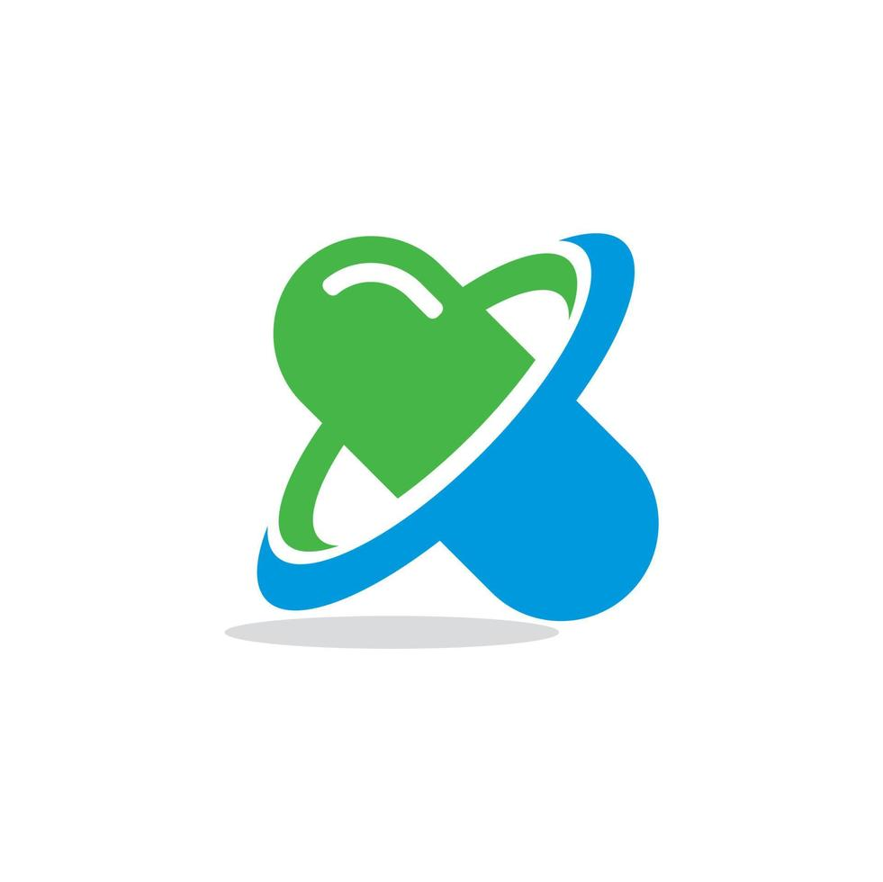

Proyecto desarrollado con Django
Este proyecto es una aplicación web para la venta virtual de vehículos. Fue diseñado y desarrollado como parte de un sprint ágil, utilizando el framework Django. La aplicación incluye las siguientes características principales:
Gestión de Vehículos:
• Diseño Interactivo
• Backend Escalable
• Entorno Virtual Configurado
Tecnologías utilizadas:
• Backend: Django 4.0.5
• Frontend: Bootstrap 5, crispy-bootstrap5
• Entorno: Virtualenvwrapper
Desarrollé un sistema web utilizando Django para gestionar laboratorios, sus directores generales y productos asociados. Este proyecto incluye la implementación de un CRUD completo para los laboratorios y la integración de Bootstrap para un diseño responsivo y amigable.
Características principales:
• Gestión de laboratorios con atributos como nombre, ciudad y país.
• CRUD para laboratorios, directores generales y productos.
• Validaciones personalizadas en el modelo, como la verificación de años de fabricación válidos.
• Pruebas unitarias para garantizar la funcionalidad y la calidad del código.
• Diseño responsivo con Bootstrap, incluyendo formularios estilizados y tablas organizadas.
• Seguimiento de visitas por usuario para la página de listado de laboratorios.
Tecnologías utilizadas:
• Python (Django)
• HTML5, CSS3 (Bootstrap 5)
• SQL para la base de datos
• Git para control de versiones
